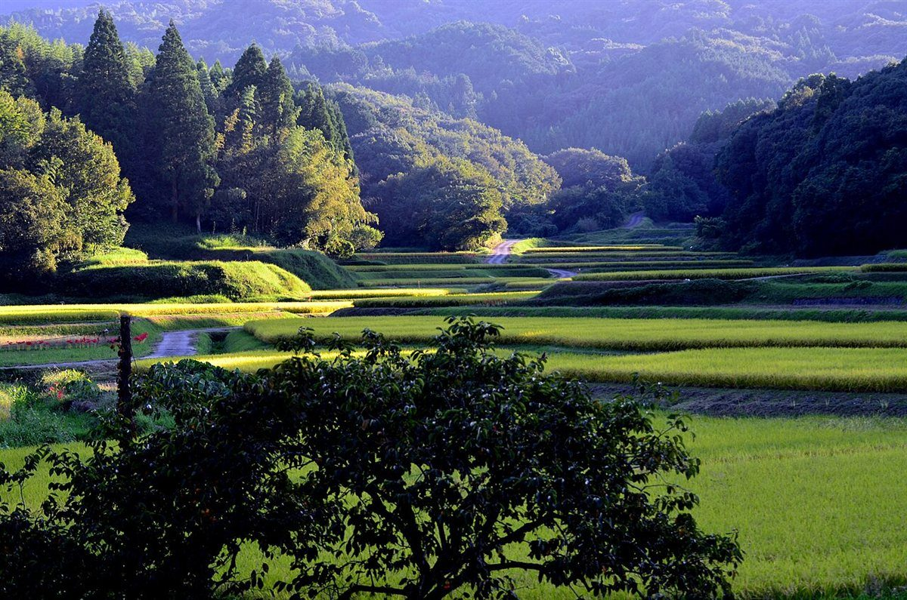
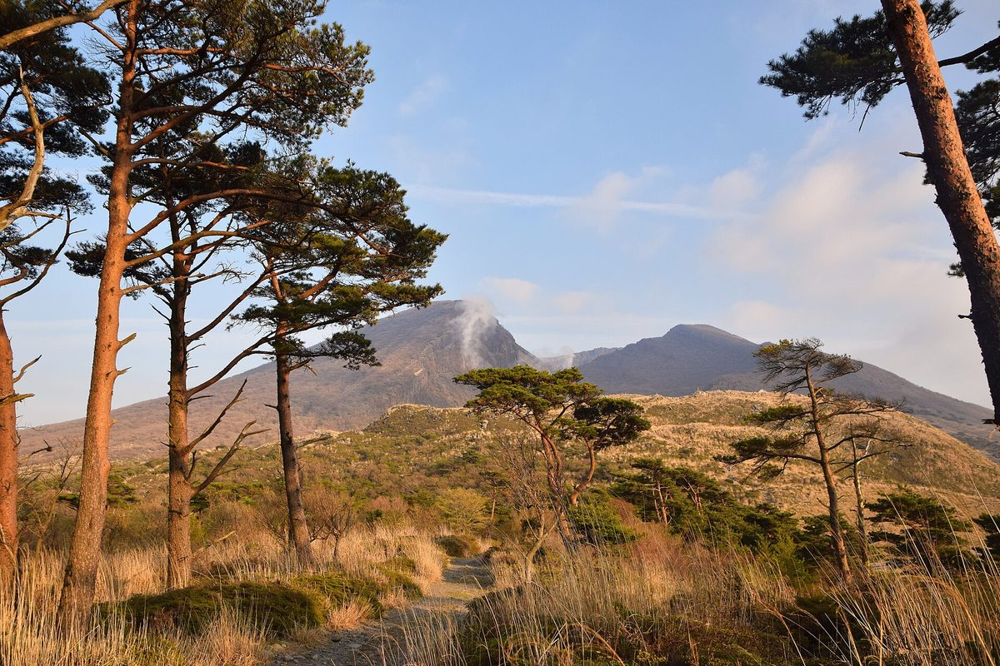
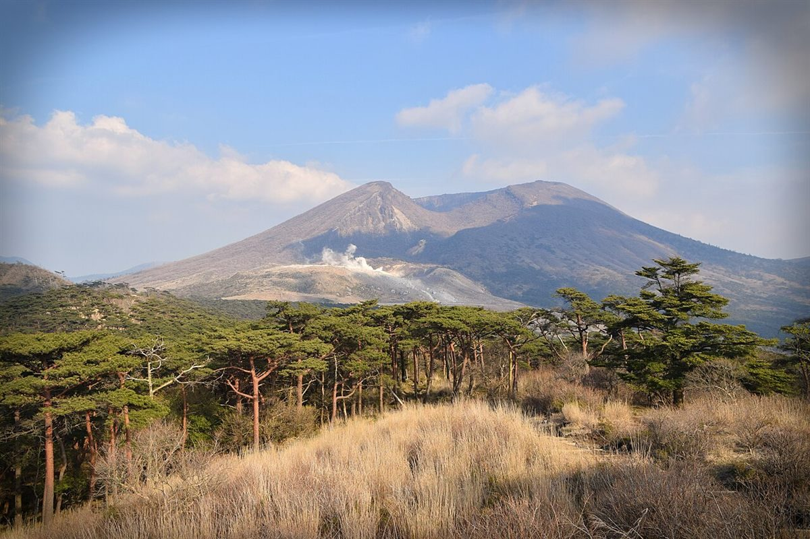

お店について

naki nakiは、大分県日田市にあるカフェです。このページでは、いま分かっていることをまとめています。分かっていないことは「準備中」と表記します。
分かっていること
| 店名 | naki naki |
|---|---|
| 種別 | カフェ |
| 所在地 | 大分県日田市隈 |
| 電話 | 070-3967-9753 |
| Instagramを見る | |
| 店主の想い | 準備中(お問い合わせください) |
| 歴史 | 準備中(お問い合わせください) |
| 席数・設備 | 準備中(お問い合わせください) |
| スタッフ | 準備中(お問い合わせください) |
このサイトのコンセプトについて
このサイトは「一日の景色」というテーマで作られています。朝・昼・夕・夜の光の移ろいを、写真と色で表しています。このテーマは制作側の案です。お店の考え方や理念、実際の姿を表すものではありません。


今後掲載したい情報
営業時間、メニュー、席の様子、アクセス方法の情報がそろい次第、このサイトに掲載する予定です。これは制作側の予定であり、お店からのお約束ではありません。
このページの写真はフリー素材のイメージで、店舗の実際とは異なります。他地域で撮影されたものや撮影地が不明なものを含みます。